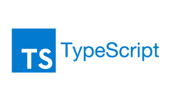

PROYECTOS EN TYPE
A lo largo de mi carrera como desarrollador especializado en TypeScript, he tenido el privilegio de liderar y contribuir a una variedad de proyectos innovadores. Estos proyectos no solo han destacado por su funcionalidad excepcional, sino también por la solidez y mantenibilidad del código gracias al uso de TypeScript. Uno de los logros destacados fue la implementación de un sistema de gestión de contenido para una empresa líder en la industria. Utilizando TypeScript, pudimos diseñar una arquitectura sólida que permitió una expansión sencilla de funcionalidades y una experiencia de usuario fluida. Otro proyecto significativo fue el desarrollo de una aplicación de comercio electrónico que requería una interfaz de usuario dinámica y altamente interactiva. TypeScript nos permitió gestionar eficientemente el estado de la aplicación, proporcionando una experiencia de compra sin problemas y adaptativa. En todos estos proyectos, TypeScript no solo fue una herramienta esencial para la detección temprana de errores, sino que también facilitó la colaboración entre equipos y la escalabilidad de los proyectos a medida que evolucionaban con el tiempo. Estos ejemplos reflejan mi compromiso con la excelencia en el desarrollo de software y cómo TypeScript ha sido una parte integral para lograr resultados exitosos. Estoy emocionado por continuar aplicando estas habilidades en proyectos futuros y explorar nuevas oportunidades para aprovechar al máximo las ventajas de TypeScript en el desarrollo de software .